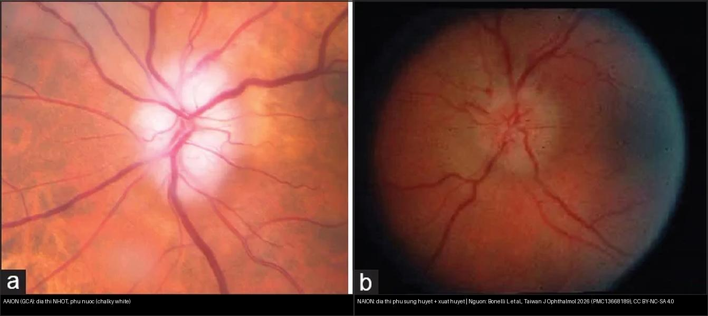
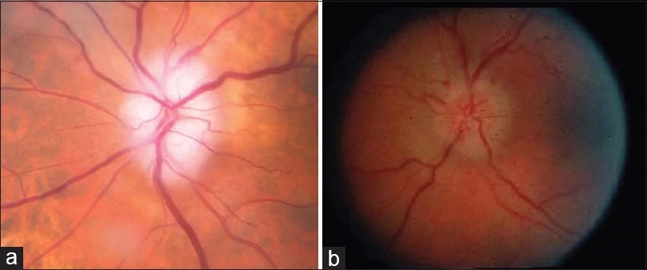
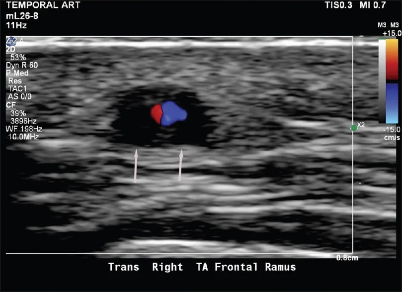
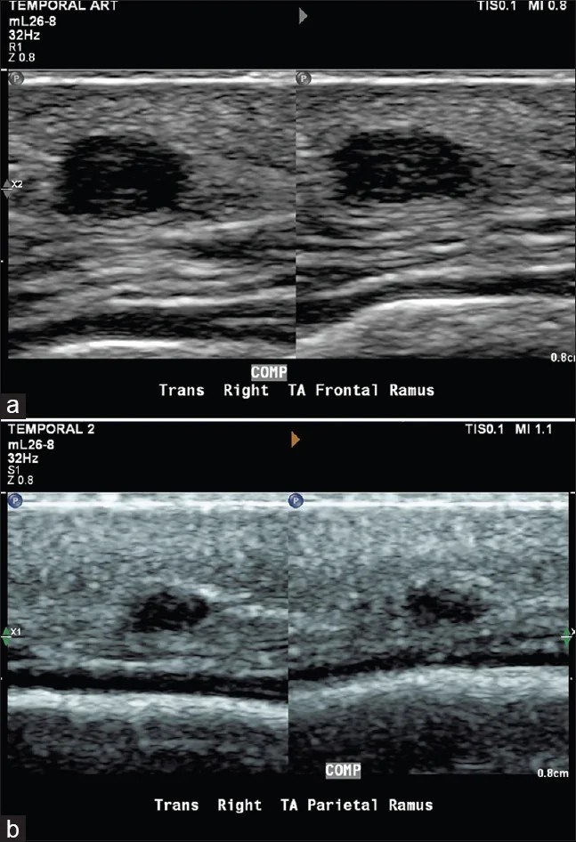
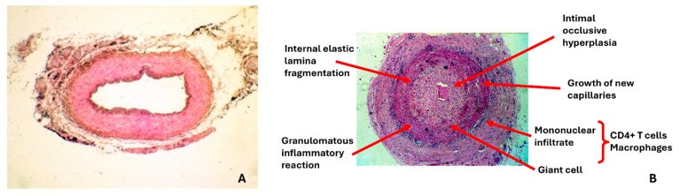
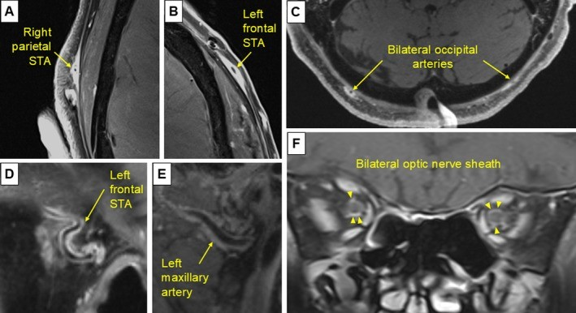
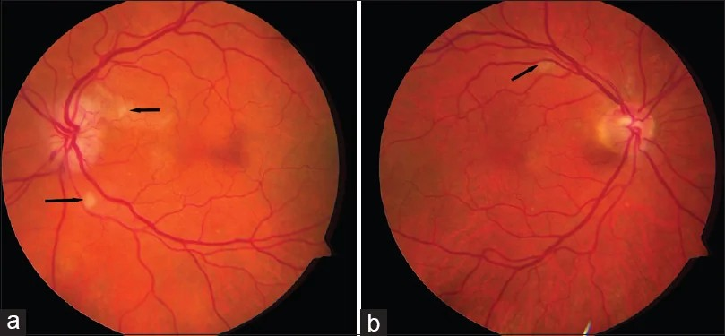
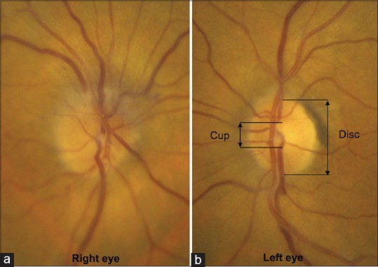
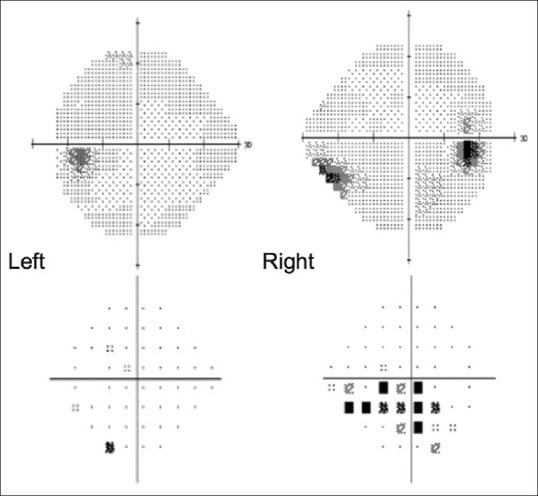
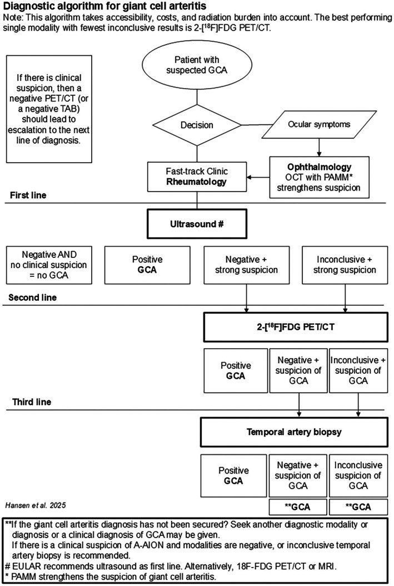

435 — Viêm động mạch tế bào khổng lồ (GCA) & thiếu máu thần kinh thị trước (AAION vs NAION): cấp cứu mù ở người > 50 tuổi / Giant cell arteritis & anterior ischemic optic neuropathy
Tags: pattern:thieu-mau-dia-thi vung:than-kinh-thi score:ACR-EULAR-2022 protocol:US-dong-mach-thai-duong protocol:TAB
Mức chắc chắn (certainty): tổng hợp y văn (literature synthesis) — nhóm tự biên từ y văn mở 2022–2026 (Taiwan J Ophthalmol 2026 CC BY-NC-SA + Ann Indian Acad Neurol 2022 CC BY-NC-SA + Acta Ophthalmol 2026 CC BY + Diagnostics 2026 CC BY), chưa gắn ca nguyên văn đơn lẻ.
1. Tổng quan — vì sao đĩa "trắng phấn" khác đĩa "sung huyết", và số nào nằm lòng
- Viêm động mạch tế bào khổng lồ (giant cell arteritis, GCA) là viêm mạch u hạt (granulomatous vasculitis) hệ thống của động mạch cỡ lớn–trung bình, ưu thế đầu–cổ (C-GCA) hoặc mạch lớn (LVV-GCA). Đây là bệnh của người lớn tuổi: gần như chỉ gặp > 50 tuổi, tần suất tăng theo tuổi, đỉnh 70–80 tuổi, nữ gấp ~2 lần nam, cao nhất ở Bắc Âu (21,57/100.000 dân > 50 tuổi).
- Cơ chế hình ảnh: viêm u hạt + tăng sinh nội mạc → hẹp/tắc lòng mạch. Ở mắt, tổn thương động mạch mi sau ngắn (short posterior ciliary arteries) → nhồi máu đầu thần kinh thị (anterior ischemic optic neuropathy). TẠI SAO đĩa nhợt màu "trắng phấn" (chalky-white pallid): nhồi máu toàn bộ đầu thị (không còn mô lành) làm phù nề đục, mất sắc hồng; ngược lại NAION chỉ nhồi máu một phần (phân đoạn) nên đĩa sung huyết đỏ (congestive) + xuất huyết quanh đĩa rõ hơn. Đây là khác biệt mô học nhìn ra bằng soi đáy mắt.
- NAION là nguyên nhân hàng đầu mất thị lực thần kinh thị cấp ở người > 50, KHÔNG do viêm mạch: cơ chế hội chứng khoang tại đĩa thị có cấu trúc "chật" (disc-at-risk — tỷ lệ đĩa/lõm nhỏ, lõm C/D nhỏ) → giảm tưới máu + phù sợi trục → tự làm nặng.
- Vì sao phân biệt là cấp cứu: mất thị lực do AAION hiếm khi hồi phục, và mắt còn lại có nguy cơ bị trong vòng 1 tuần nếu không điều trị; ngược lại cho NAION dùng corticoid liều cao là vô ích và có hại.
Ngưỡng định lượng nằm lòng:
- AAION = 80–85% các ca mất thị lực trong GCA; ION gặp ở tới 20% bệnh nhân GCA; PION (thể sau) chiếm tới 7% ca mất thị lực cấp trong GCA (đĩa bình thường lúc đầu).
- Thị lực AAION thường rất kém: > 60% thấy < 20/200 (NAION: ~½ thấy ≥ 20/64, 1/3 < 20/200).
- ESR (máu lắng) dùng phương pháp Westergren, ngưỡng kinh điển > 50 mm/h (1 trong 5 tiêu chuẩn ACR 1990); giới hạn trên ước tính = tuổi/2 (nam), = (tuổi + 10)/2 (nữ). CẢNH BÁO: ESR bình thường ở tới 30% ca GCA có sinh thiết dương.
- CRP nhạy hơn ESR (không phụ thuộc tuổi/giới); tiểu cầu tăng có giá trị tiên đoán dương ~87% cho sinh thiết dương.
- NAION: tần suất ~10,3/100.000/năm, trung vị khởi phát 72 tuổi; ~50% có tăng huyết áp, ~25% đái tháo đường; ngưng thở khi ngủ do tắc nghẽn làm tăng nguy cơ.
- Fluorescein (FA): chậm đổ đầy hắc mạc từng vùng kéo dài 45–60 giây là dấu hiệu đặc hiệu cho AAION/GCA.
2. Mẫu hình + chẩn đoán phân biệt theo vị trí (gamut)
- Câu hỏi lọc 1 — tuổi: > 50 tuổi + phù đĩa cấp = nghĩ mạch máu/thiếu máu (AAION, NAION) trước tiên; người trẻ → viêm thị (optic neuritis).
- Câu hỏi lọc 2 — đau: đau khi đảo mắt = viêm thị; không đau, tỉnh dậy đã mờ 1 mắt = NAION; không đau + triệu chứng hệ thống (đau đầu, đau hàm) = AAION/GCA.
- Câu hỏi lọc 3 — một bên hay hai bên đồng thời: 2 bên đồng thời hoặc tiến triển trong vài ngày = gần như chắc GCA.
- Gamut phù đĩa cấp ở người > 50: AAION (GCA) · NAION · PION (đĩa bình thường, 7%) · phù đĩa do tăng áp lực nội sọ (bài 433) · chèn ép/u (bài 431/432) · tắc động mạch trung tâm võng mạc (CRAO) kèm/không kèm.
- Cụm dấu hiệu "chốt sang GCA" (khác NAION): 2 bên đồng thời · cơn mù thoáng qua kiểu amaurosis fugax (tới 30%) hoặc song thị thoáng qua · đốm bông (cotton wool spots) hoặc tắc động mạch võng mạc (kể cả động mạch mi–võng mạc) · thiếu máu hắc mạc trên FA — không dấu nào điển hình trong NAION.
- Gợi nhớ triệu chứng đầu–cổ của GCA: đau đầu mới, đau hàm khi nhai (jaw claudication), đau/loét da đầu, động mạch thái dương nổi nốt/giảm mạch, đau cơ–cứng vai cổ (PMR).
3. Bảng so sánh phân biệt (ma trận đối chiếu)
| Thực thể (entity) | Hình ảnh điển hình | Chốt vào (rule-in) | Chốt loại (rule-out) | Gợi ý xác nhận |
|---|---|---|---|---|
| AAION / GCA | Đĩa nhợt "trắng phấn", phù toàn bộ; đốm bông, có thể tắc mạch võng mạc; FA chậm đổ đầy hắc mạc 45–60 s; 2 bên hoặc sang nhanh | > 50 tuổi + không đau + triệu chứng hệ thống (đau hàm/đầu) + ESR ≥ 50/CRP cao + 2 bên | Triệu chứng hệ thống âm + ESR/CRP bình thường + sinh thiết/US âm → NAION | ESR/CRP cấp cứu, US halo, TAB, điều trị ngay không chờ |
| NAION | Đĩa sung huyết đỏ, phù một phần/phân đoạn, xuất huyết quanh đĩa (tới ¾), lõm C/D nhỏ ở mắt lành = disc-at-risk; thị trường mất kiểu độ cao (altitudinal), thường dưới | > 50 + không đau + tỉnh dậy mờ 1 mắt + disc-at-risk mắt đối diện | 2 bên + triệu chứng hệ thống/ESR cao → AAION | Không steroid (vô ích); kiểm soát mạch máu |
| Viêm thị (optic neuritis) | Đĩa có thể phù/không; MRI T2 sáng + ngấm thuốc đoạn ngắn, RAPD; giảm màu nặng không tương xứng | Đau khi đảo mắt + trẻ + hồi phục từng đợt | Không đau, > 50 tuổi, ESR cao → mạch máu | Steroid TM; AQP4/MOG; MRI não |
| PION (GCA thể sau – cạm bẫy) | Đĩa BÌNH THƯỜNG nhưng mất thị lực nặng cấp; vẫn có bối cảnh GCA | > 50 + mất thị lực nặng mà đĩa bình thường + triệu chứng GCA | Đĩa phù rõ + trẻ → viêm/mạch khác | Vẫn phải điều trị GCA; MRI loại chèn ép/viêm |
| CRAO trong GCA | Điểm đỏ anh đào (cherry-red spot), võng mạc trắng đục lan tỏa | Mù cấp không đau + đặc trưng CRAO ở người > 50 | — | Vẫn tìm GCA (một biểu hiện của cùng bệnh) |

Trái: AAION trong GCA — đĩa thị nhợt màu "trắng phấn" do nhồi máu toàn bộ đầu thị. Phải: NAION — đĩa sung huyết, phù một phần. Nguồn: Bonelli L et al., Taiwan J Ophthalmol 2026 (PMC13668189), CC BY-NC-SA 4.0. Ảnh ghép letterbox.Quiz composite: hai bệnh nhân đều > 60 tuổi, mờ mắt không đau, phù đĩa. Bên nào phải cấp cứu corticoid liều cao ngay?
Bấm để hiện đáp án
- Trái = AAION (GCA) → cấp cứu: bắt đầu corticoid liều cao NGAY (không chờ sinh thiết), vì mắt còn lại có thể mất trong 1 tuần; kèm ESR/CRP + US động mạch thái dương/sinh thiết.
- Phải = NAION → KHÔNG steroid: điều trị vô ích và có hại; kiểm soát huyết áp/đái tháo đường/ngưng thở khi ngủ, giải thích tiên lượng và nguy cơ mắt đối diện 15–24% trong 5 năm.
- Chốt phân biệt: màu đĩa (nhợt trắng phấn vs sung huyết) + triệu chứng hệ thống + huyết học.
4. Protocol chụp–chẩn đoán + hệ điểm chuẩn hóa (2022 ACR/EULAR) + xử trí
- Bước 0 — cấp cứu lâm sàng: nghi GCA ⇒ lấy máu (ESR, CRP, CBC) và bắt đầu corticoid liều cao NGAY, KHÔNG chờ kết quả hình ảnh/sinh thiết.
- Siêu âm động mạch thái dương (EULAR first-line): đầu dò ≥ 15–22 MHz; dấu quầng (halo sign) = dày thành giảm hồi âm quanh lòng mạch; dấu chèn ép (compression sign) = mạch KHÔNG xẹp khi ép. Quét cả ĐM thái dương + ĐM nách (axillary) vì gộp hai vị trí cho Se 88%, Sp 96% (Bosch); thái dương đơn thuần thấp hơn. Lưu ý: độ nhạy US giảm rõ sau ~4 ngày corticoid ⇒ chụp càng sớm càng tốt. Dương tính giả (quầng) ~4–4,6% (xơ vữa, lymphoma, IgG4, GPA...).
- Sinh thiết động mạch thái dương (TAB): tiêu chuẩn vàng, độ đặc hiệu ~100%, độ nhạy 60–77%; trì hoãn tới 2 tuần sau khi dùng corticoid KHÔNG giảm độ nhạy ⇒ không được lùi điều trị vì chờ sinh thiết. ACR khuyến cáo đoạn mạch ≥ 1,5–2,5 cm; âm tính giả tới 13% do tổn thương cách quãng (skip lesions) → nghi cao mà sinh thiết âm thì cân nhắc sinh thiết bên đối diện.
- MRI hốc mắt/sọ: T1 fat-sat sau tiêm + T2 fat-sat — tìm dày/ngấm thành động mạch và ngấm bao thần kinh thị (gợi ý GCA ở ca CRP âm/không điển hình).
- FDG-PET/CT: viêm mạch lớn (aortitis, ĐM dưới đòn/nách) — dùng khi US âm-không kết luận nhưng nghi cao, hoặc tìm tổn thương mạch lớn. FA: chậm đổ đầy hắc mạc 45–60 s. OCT: tìm PAMM (paracentral acute middle maculopathy) — dấu hiệu vi mạch gợi ý GCA.
- So sánh độ chính xác (GAME study, Hansen 2026): US Se 82%/Sp 90% · FDG-PET/CT Se 74%/Sp 100% · TAB Se 68%/Sp 100%; khi US không kết luận thì PET/CT nhạy hơn TAB (75% vs 38%). AUC tương đương (~0,84–0,87). ⇒ chiến lược đa phương thức (multimodal) trong phòng khám nhanh (fast-track).
Tiêu chuẩn phân loại 2022 ACR/EULAR GCA — bắt buộc: tuổi ≥ 50 lúc chẩn đoán; ≥ 6 điểm = GCA:
- Điểm cộng thêm: mất thị lực đột ngột +3; ESR tối đa ≥ 50 mm/h hoặc CRP ≥ 10 mg/L = +3; sinh thiết dương hoặc dấu quầng trên US +5; cứng khớp vai/cổ buổi sáng +2; đau hàm/lưỡi +2; đau đầu thái dương mới +2; đau da đầu +2; khám ĐM thái dương bất thường +2; tổn thương ĐM nách hai bên +2; FDG-PET hoạt tính lan dọc ĐMC +2.
- Đối chiếu ngoại kiểm (bệnh viện không học thuật): cắt ≥ 6 cho AUC 0,96, Se 98%, Sp 57,5%.
Điều trị (cấp cứu):
- Prednisolone uống 1 mg/kg/ngày, không vượt 60–80 mg/ngày, bắt đầu ngay.
- Có mất thị lực (thoáng qua hoặc thật): methylprednisolone TM 0,25–1 g/ngày × 3–5 ngày trước khi chuyển uống.
- Giảm liều (theo EULAR): 40–60 mg/ngày → 15–20 mg trong 2–3 tháng → đích < 5 mg/ngày sau 1 năm; theo dõi tái phát + tác dụng phụ.
- Tiết kiệm corticoid: tocilizumab (kháng thụ thể IL-6, thử nghiệm GiACTA) — ACR khuyến cáo có điều kiện phối hợp corticoid + tocilizumab ở ca mới; dự phòng Pneumocystis bằng trimethoprim–sulfamethoxazole khi dùng corticoid liều cao + tocilizumab.
- Theo dõi lâu dài: nguy cơ phình/tách thành ĐMC và biến chứng mạch lớn; loãng xương do corticoid.
flowchart TD
A[Nguoi > 50 tuoi: mo mat KHONG dau / phu dia thi] --> B{Dau khi dao mat?}
B -->|Co| C["Viem thi (optic neuritis) - tre hon, ngam MRI"]
B -->|Khong| D{Trieu chung he thong: dau ham, dau dau, PMR, 2 ben dong thoi?}
D -->|Co / nghi cao| E[Lay mau ESR-CRP-CBC + BAT DAU corticoid lieu cao NGAY]
D -->|Khong| F[Xet thanh hinh: nho NAION, kiem tra disc-at-risk mat doi dien]
E --> G[US dong mach thai duong + nach: halo / compression sign]
G -->|Duong tinh| H[Chan doan GCA - tiep tuc dieu tri + duy tri tocilizumab]
G -->|Am / khong ket luan| I[FDG-PET/CT hoac MRI thanh mach-hoc mat]
I -->|Duong tinh| H
I -->|Am + nghi cao| J[Sinh thiết dong mach thai duong >= 1,5-2,5 cm]
J -->|Duong tinh| H
J -->|Am nhung nghi cao| K[Can nhac sinh thiet doi ben; danh gia lai ACR/EULAR >= 6 diem]
F --> L[NAION: KHONG steroid - kiem soat mach mau - tu van 15-24%/5 nam mat doi dien]





Hàng 1: đáy mắt AAION (nhợt) vs NAION (sung huyết + xuất huyết tia). Hàng 2: dấu quầng (dày thành giảm hồi âm) và dấu chèn ép (mạch không xẹp) — Bonelli L et al., Taiwan J Ophthalmol 2026 (PMC13668189), CC BY-NC-SA 4.0. Hàng 3: mô bệnh học sinh thiết bình thường vs viêm mạch u hạt (gãy lá đàn hồi trong, tăng sinh nội mạc, tế bào khổng lồ) — Rodriguez-Pla A, Diagnostics 2026 (PMC12896486), CC BY 4.0. Hàng 4: MRI T1 sau tiêm ngấm thành ĐM thái dương/đỉnh/chẩm và bao thần kinh thị hai bên — Yang DL et al., ACR Open Rheumatol 2026 (PMC13147153), CC BY-NC-ND 4.0 (nguyên bản).flowchart TD A[Chan doan xac nhan GCA] --> B[Methylprednisolone TM 0,25-1 g/ngay x 3-5 ngay neu mat thi luc] B --> C[Prednisolone uong 1 mg/kg - max 60-80 mg/ngay] C --> D[Them tocilizumab - tiet kiem corticoid] D --> E[Giam lieu: 15-20 mg trong 2-3 thang, dich < 5 mg sau 1 nam] E --> F[Theo doi tai phat + phinh/tach thanh DMC + loang xuong]
5. Biến thể bình thường và cạm bẫy
- ESR/CRP bình thường KHÔNG loại trừ GCA (tới 30% sinh thiết dương có ESR bình thường) — quyết định dựa lâm sàng + hình ảnh, "occult GCA" chỉ có mất thị lực mà không đau hàm/đầu.
- Sinh thiết âm không loại trừ (~13% âm tính giả do skip lesion) — nghi cao thì điều trị và cân nhắc sinh thiết đối bên.
- Đừng chờ sinh thiết/hình ảnh mới dùng corticoid — điều trị muộn = mù mắt thứ hai; đây là lỗi dễ mắc nhất.
- Đĩa trắng phấn không phải lúc nào cũng rõ — ca sớm/không điển hình có thể như NAION; dựa vào bối cảnh hệ thống + huyết học + 2 bên.
- PION (đĩa bình thường) là cạm bẫy: mất thị lực nặng mà đĩa trông lành vẫn có thể là GCA ⇒ không được trấn an.
- Cho NAION dùng corticoid liều cao là sai — vô ích, hại (đái tháo đường, loãng xương); phẫu thuật giải ép thần kinh thị (IONDT) không có lợi, có thể hại.
- NAION tái phát: cùng mắt 3–8%, mắt đối diện 15–24% trong 5 năm — tầm soát và kiểm soát yếu tố nguy cơ mạch máu.
- Tránh bẫy "phù đĩa = phù đĩa do tăng áp lực nội sọ": ở người > 50 phù đĩa một bên cấp, thiếu máu đứng đầu danh sách, không mặc định IIH.
- GCA có thể đến bằng CRAO đơn thuần, KHÔNG có phù đĩa: "điểm đỏ anh đào + võng mạc trắng đục" ở người > 50 tuổi vẫn phải hỏi đau hàm/đau đầu + ESR/CRP và dùng steroid liều cao ngay nếu nghi — bỏ sót thì mắt thứ hai mất trong vòng 1 tuần. Chi tiết chẩn đoán – phân độ OCT – cửa sổ 4,5 giờ: xem bài 276.
6. Tự lượng giá — Blind Quiz
Ca 1 — Cụ bà 74 tuổi đau đầu thái dương mới + đau hàm khi nhai 2 tuần, nay đột ngột mờ mắt trái không đau. Đáy mắt:

- Hỏi: mô tả đĩa thị? Dấu hiệu nào gợi ý u hạt/viêm mạch hơn NAION? Ba xét nghiệm cần làm ngay?
Bấm để hiện đáp án (findings + chẩn đoán)
- Dấu hiệu (findings): đĩa thị nhợt "trắng phấn" (pallid/chalky-white edema) ở mắt trái + đốm bông (cotton wool spots); mắt đối diện cũng có đốm bông — bằng chứng thiếu máu võng mạc hai bên.
- Chẩn đoán (diagnosis): AAION do GCA — vì > 50 tuổi + đau hàm/đau đầu + 2 bên + đốm bông (những dấu này không điển hình trong NAION).
- Xét nghiệm/xử trí ngay: ESR + CRP + CBC (tiểu cầu), bắt đầu corticoid liều cao ngay, rồi US động mạch thái dương và/hoặc sinh thiết.
- Nguồn ảnh: Bonelli L et al., Taiwan J Ophthalmol 2026 (PMC13668189) Fig. 3, CC BY-NC-SA 4.0.
Ca 2 — Ông 62 tuổi đái tháo đường, tỉnh dậy mờ mắt phải không đau. Đáy mắt + thị trường:


- Hỏi: dấu hiệu nào ở mắt lành giúp chốt chẩn đoán? Thị trường mất kiểu gì? Điều trị?
Bấm để hiện đáp án (findings + chẩn đoán)
- Dấu hiệu (findings): mắt phải phù đĩa thị phân đoạn phía trên (bệnh); mắt trái lành có tỷ lệ lõm/đĩa nhỏ = disc-at-risk (lõm C/D nhỏ). Thị trường mất kiểu độ cao (altitudinal), ưu thế nửa dưới mắt phải.
- Chẩn đoán (diagnosis): NAION — vì > 50 + không đau + tỉnh dậy mờ 1 mắt + disc-at-risk ở mắt đối diện; không steroid.
- Xử trí: kiểm soát huyết áp/đái tháo đường/rối loạn lipid, tầm soát ngưng thở khi ngủ; tư vấn nguy cơ mắt đối diện 15–24% trong 5 năm.
- Nguồn ảnh: Patil AD, Biousse V, Newman NJ, Ann Indian Acad Neurol 2022 (PMC9795705) Fig. 1–2, CC BY-NC-SA 4.0.
Ca 3 — Cùng bệnh nhân nghi GCA, siêu âm động mạch thái dương dưới đây:
- Hỏi: gọi tên dấu hiệu? Nó có thay thế sinh thiết không? Vì sao phải làm sớm?
Bấm để hiện đáp án (findings + chẩn đoán)
- Dấu hiệu (findings): dấu quầng (halo sign) — dày thành mạch giảm hồi âm bao quanh lòng mạch (mũi tên trắng), do phù/viêm thành. Nghiệm pháp xác nhận: dấu chèn ép (compression sign) — mạch không xẹp khi đè đầu dò.
- Ý nghĩa: US gộp thái dương + nách cho Se 88%/Sp 96%; thay thế TAB trong chẩn đoán lâm sàng ở bối cảnh phù hợp nhưng không thay thế mô bệnh khi cần loại trừ bệnh khác.
- Vì sao sớm: độ nhạy US giảm rõ sau ~4 ngày corticoid — chụp trước khi điều trị.
- Nguồn ảnh: Bonelli L et al., Taiwan J Ophthalmol 2026 (PMC13668189) Fig. 7, CC BY-NC-SA 4.0.
Ca 4 — Bệnh nhân nghi GCA: sơ đồ chẩn đoán đa phương thức (Hansen 2026):

- Hỏi: đường đầu tiên (first-line) là gì? Nếu US âm nhưng nghi cao thì bước tiếp? Khi nào cần sinh thiết?
Bấm để hiện đáp án (findings + chẩn đoán)
- Đường đầu tiên = siêu âm (theo EULAR); âm + nghi cao (hoặc không kết luận + nghi cao) ⇒ FDG-PET/CT (đường hai); vẫn không kết luận/nghi cao ⇒ sinh thiết động mạch thái dương (đường ba).
- Điểm quan trọng: âm nhưng lâm sàng nghi mạnh KHÔNG loại trừ GCA; không chờ kết quả mới điều trị.
- Chốt từ GAME study: khi US không kết luận, PET/CT nhạy hơn TAB (75% vs 38%) — ủng hộ cách tiếp cận đa phương thức ở phòng khám nhanh.
- Nguồn ảnh: Hansen MS et al., Acta Ophthalmol 2026 (PMC13460362) Fig. 2, CC BY 4.0.
Bài liên quan chéo
- 400 – Tổng quan Mắt
- 430 – Đường thị giác: viêm vs thiếu máu (NAION, viêm thị, AQP4/MOG)
- 433 – Phù đĩa thị vs drusen (phù đĩa thật vs giả phù; IIH)
- 434 – Teo thị do độc–chuyển hóa & LHON (tiếp cận teo thị 2 bên)
- 444 – Tắc mạch võng mạc (CRAO — biểu hiện khác của GCA)
- 276 – Tắc động mạch trung tâm võng mạc cấp (CRAO) (CRAO do GCA vs CRAO thường; cửa sổ 4,5 giờ, OCT, workup đột quỵ)
- 451 – Biểu hiện mắt của bệnh hệ thống (viêm mạch, ANCA)
Ảnh
435_aaion-vs-naion_Fundus_PMC13668189-Fig2-CCBYNCSA.jpg,435_aaion-cotton-wool_Fundus_PMC13668189-Fig3-CCBYNCSA.jpg,435_halo-sign_US_PMC13668189-Fig7-CCBYNCSA.jpg,435_compression-sign_US_PMC13668189-Fig8-CCBYNCSA.jpg— Bonelli L et al., Taiwan J Ophthalmol 2026 (PMCID: PMC13668189), CC BY-NC-SA 4.0.435_naion-disc-at-risk_Fundus_PMC9795705-Fig1-CCBYNCSA.jpg,435_naion-thi-truong-humphrey_TVF_PMC9795705-Fig2-CCBYNCSA.jpg— Patil AD, Biousse V, Newman NJ, Ann Indian Acad Neurol 2022 (PMCID: PMC9795705), CC BY-NC-SA 4.0.435_flowchart-chan-doan_PMC13460362-Fig2-CCBY.jpg— Hansen MS et al., Acta Ophthalmol 2026 (PMCID: PMC13460362), CC BY 4.0.435_tab-histology_PMC12896486-Fig3-CCBY.jpg— Rodriguez-Pla A, Diagnostics 2026 (PMCID: PMC12896486), CC BY 4.0.435_mri-thanh-mach_PMC13147153-Fig2-CCBYNCND.jpg— Yang DL et al., ACR Open Rheumatol 2026 (PMCID: PMC13147153), CC BY-NC-ND 4.0 (giữ nguyên bản, không ghép).composite_AAION-vs-NAION.jpg— ghép 2 panel của Fig. 2 (PMC13668189) bằngtools/make_composite.py.- Chi tiết giấy phép từng ảnh trong
images/CREDITS.md. AuntMinnie: chỉ dẫn link, không tải.
Không dùng để chẩn đoán độc lập khi chưa có người hướng dẫn.